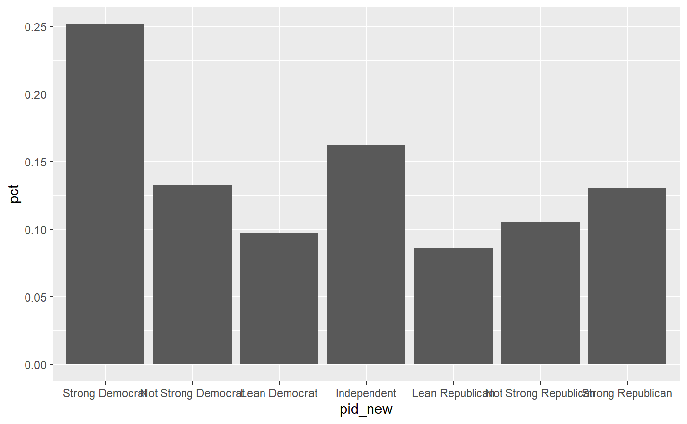

This a Modification of case_when that keeps things in the order they were recoded
frcode(...)
| df | Name of the Dataset |
|---|
cces <- read_csv("https://raw.githubusercontent.com/ryanburge/cces/master/CCES%20for%20Methods/small_cces.csv")#> Warning: Missing column names filled in: 'X1' [1]#> Warning: Duplicated column names deduplicated: 'X1' => 'X1_1' [2]#> #> #> #>#>cces %>% mutate(pid_new = frcode(pid7 == 1 ~ "Strong Democrat", pid7 == 2 ~ "Not Strong Democrat", pid7 == 3 ~ "Lean Democrat", pid7 == 4 ~ "Independent", pid7 == 5 ~ "Lean Republican", pid7 == 6 ~ "Not Strong Republican", pid7 == 7 ~ "Strong Republican", TRUE ~ "REMOVE")) %>% ct(pid_new) %>% filter(pid_new != "REMOVE") %>% ggplot(., aes(x = pid_new, y = pct)) + geom_col()